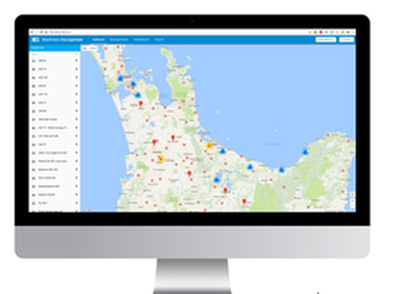
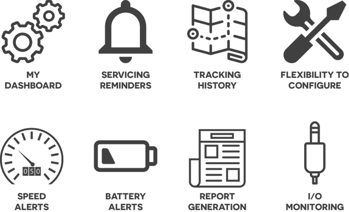

M5 Machinery Fleet management and tracking System
A complete vehicle tracking and top machinery fleet management system.
M5 is a complete vehicle tracking and top machinery fleet management system. The system transmits information about your fleet in real time, including everything from the machine's operational data, to its location. An overview of this information is accessible from any location on a smartphone, desktop or tablet via the M5 Dashboard.
System Function
- Generate easily interpreted graphical reports from preset or user defined time periods
- Generate reports for all shown inputs
- Drill into graphs to show more precise readings
- Show as many reports as you want on the same page for easy comparison
- Get top insights into your assets status and performance over any time frame
This is a system that has been designed to be retrofitted to any machine of any age, whether this is a truck, sweeper, digger etc. If you update your assets the unit can be moved to the new vehicle.
The system will track details making it easy for you to check due dates and distances covered, and will know its location – even down to its movement on site.
We can adapt the system to suit the ever changing needs of our customers. This includes customizing the dashboard and updating software remotely, changing or adding to the application as required.
Fleet Visibility
- Locate assets easily on the dashboard
- A text box displays the last communication
- The current status of your asset is displayed
- Links to the graphical display
- Pinpoint your assets location
- See other assets in the immediate area
- Estimate travel and arrival times
- Check if assets and drivers are performing
Features
Servicing
The system connects to the vehicle's odometer and tracks when service events and road user charges are due. Great for small and large fleets alike, this feature makes managing your fleet maintenance and compliance easier than ever before.
Tracking History
The system tracks and stores data , allowing you to see where any vehicle is located in any time period. You can also see details such as vehicle speed, locations and running time.
Flexibility to configure
The features of our system can easily be modified to suit the individual needs of any company. We have a team of in-house developers who can tailor the system to function in your work environment perfectly.
Speed Alerts
You can turn on speed alerts so every time a vehicle goes over the speed limit or any predetermined speed, you receive an email thus ensuring the safety of your assets and drivers.
Report Generation
Improve fleet utilization by easily creating operational hours and motion analysis reports. Minimize the hours spent compiling data by letting the system do the work for you. The M5 Dashboard lets you select the report type, relevant machinery, date and time to customize the data.
Input/Output Monitoring
Our system supports both analog and digital inputs and outputs. These can easily be configured to read a range of different signals allowing the collection of more specific data.